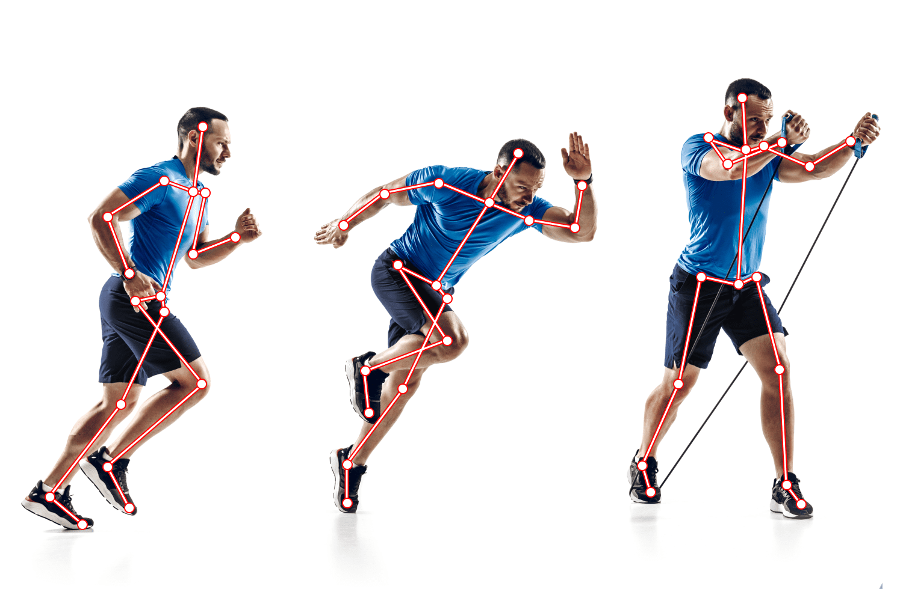
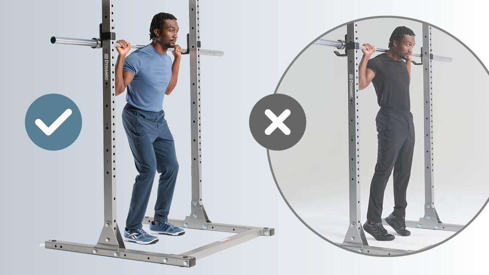

What PosturePro Does
PosturePro uses advanced computer vision and deep learning techniques to monitor your body posture while you exercise. It provides instant feedback to correct your form, helping you achieve better results and avoid potential injuries. PosturePro leverages advanced computer vision techniques to monitor your posture in real-time. By detecting key body landmarks — such as shoulders, elbows, hips, and knees — it calculates joint angles and compares them to optimal movement patterns for various exercises.

Why Good Posture Matters
Good posture during exercise is essential for preventing strains and injuries. Proper alignment allows your muscles to work efficiently, improving your performance and overall health.
